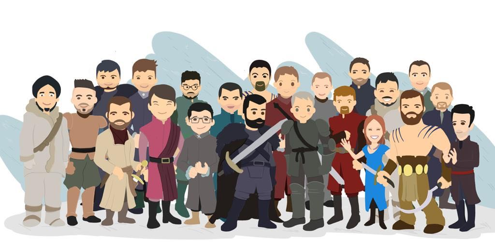

What the SDK does on its own: once
push_vapid_public_key is set, every load re-registers the
subscription token if the browser has already granted notification
permission, and notification clicks are recorded as
[CLY]_push_action without any code here. The button below is
only needed for the very first opt-in, because browsers refuse a
permission prompt that does not come from a user gesture. Pass
push_auto_register: false to turn the automatic part off.
How to test: Serve this repo over HTTPS, or over HTTP
from localhost, so the /countly_sw.js path is
reachable from the page. Service workers and the Push API need a secure
context: file:// and plain-HTTP LAN or hosted origins are
both refused, only loopback is exempt. Replace
app_key, url and
push_vapid_public_key above. Click "Enable Push
Notifications" and accept the browser prompt (in Edge the prompt is a
bell icon at the right end of the address bar, not a popup) — the SDK will queue a
token_session request containing the
web_token JSON. To simulate a click-through, open
DevTools → Application → Service Workers and use the "Push" button
of the countly_sw.js worker, whose scope is
/countly-push/, to inject a payload such as
{"title":"Hi","message":"Test","c":{"i":"507f1f77bcf86cd799439011"}}.
The i value must be a 24-character message id: the server drops
[CLY]_push_action events whose id has any other length.
Pressing "Disable" is remembered across reloads; only "Enable" subscribes again.
Seeing what happens: with debug: true the SDK registers the
worker as /countly_sw.js?cly_debug=1, so the worker narrates every push,
click and close in its own console (DevTools → Application → Service Workers → Inspect)
and forwards the same lines to this page, where they appear as [SW]. The
push_notification_listener above writes each notification event below.